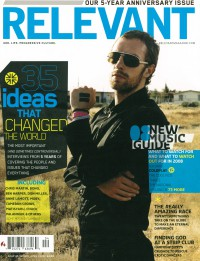

Bono
 |
| March 2004 Relevant |
 |
| March 2008 Relevant |
Media coverage:
- Spr 2002 in Cornerstone "Is Honesty Always Honest?", by Jon Trott
- 22 Apr 2002 in Christianity Today "News: Bono Tells Christians: Don't Neglect Africa", by Sheryl Henderson Blunt
- Sep 2003 in CCM "Insider: The Six Degrees of Bono"
- Mar 2004 in Relevant "Opening Eyes", by Andy Argyrakis
- Mar 2004 in Prism "Music Notes: Death In Our Record Collection", by Dwight Ozard
- May 2004 in Prism "Music Notes: CCM News: Collaborations & Compilations Worth Owning", by Dwight Ozard
- Jun 2005 in CCM "Sightings: U2's Bono Dismantled", by Jay Swartzendruber
- Nov 2005 in New Man "Men Of The Year"
- Jan 2006 in HM "Hardnews: Quick & Concise: Bono"
- 21 Mar 2006 in Christian Century "Christian Megastar", by Mark Yaconelli
- Apr 2006 in CCM "Bono's Prayer Request", by Jay Swartzendruber
- Mar 2008 in Relevant "35 Ideas That Changed The World: Rock Star Activist", by Andy Argyrakis
- Mar 2013 in Relevant "10: Back to the Future: 10 People Who Changed Everything", by Penny Carothers
© 2011 CMnexus. Last updated September 2019. Contact: editor -AT- cmnexus -DØT- org About